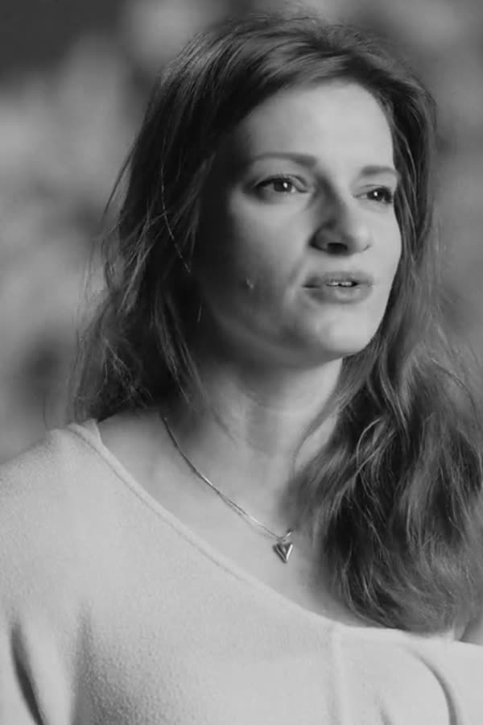
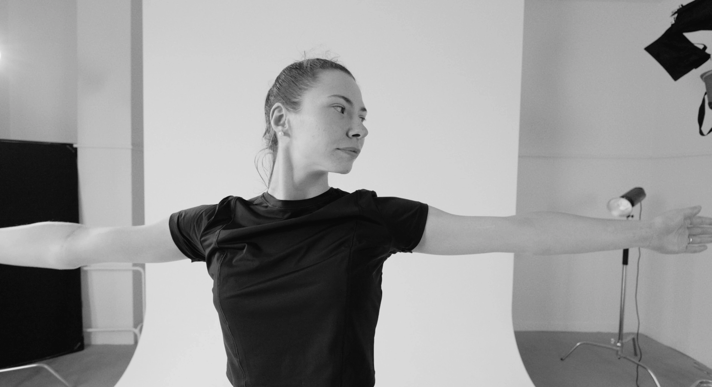
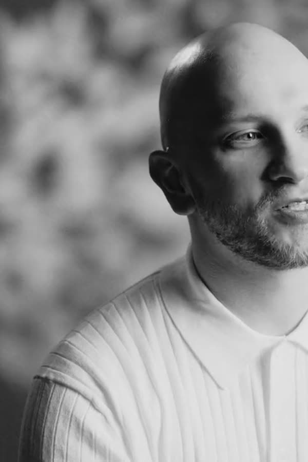
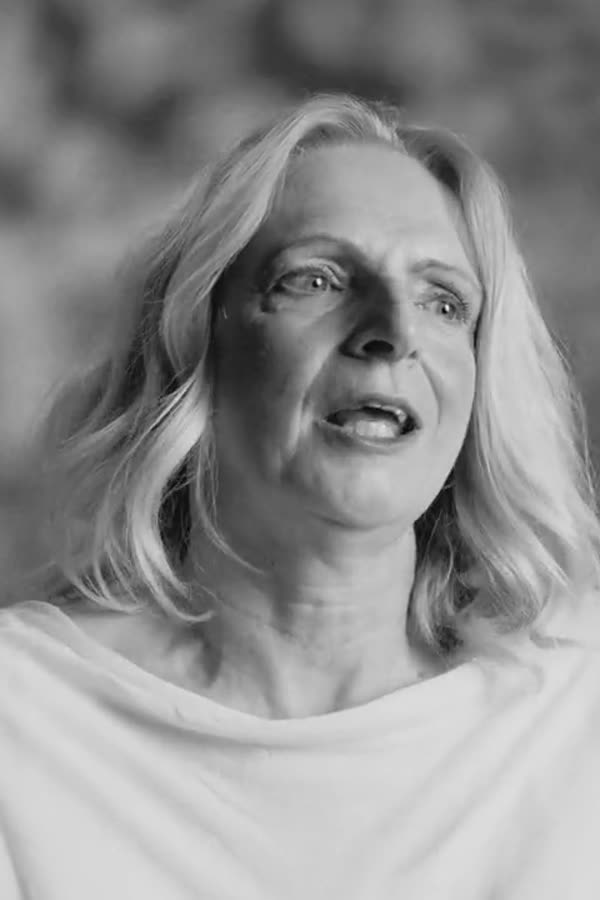
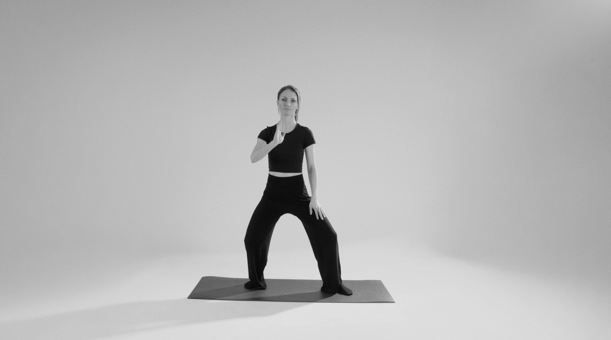
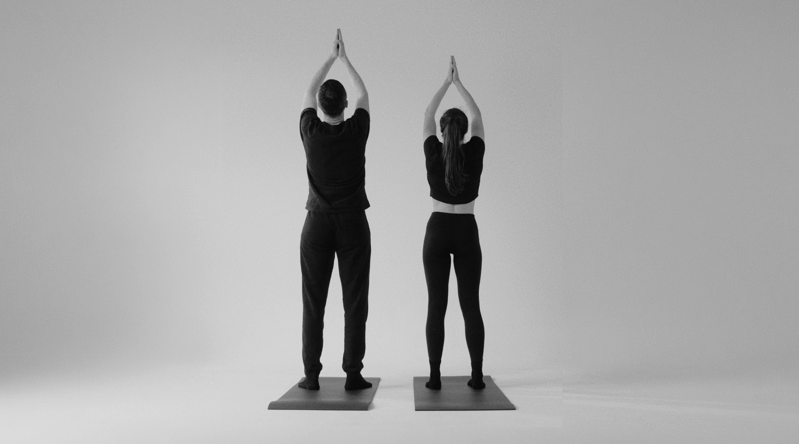

Jana
„Nemůžu si pomoct, ale nějak mi to ten život zlepšilo.“

Bolí vás záda při každém delším sezení, vstávání z postele nebo při obyčejném nákupu, a dosavadní protahování nepomáhá?
Máte pocit, že se vaše tělo stává den ode dne ztuhlejším, plynulý lehký pohyb z dětství vyprchal a pohyb už prostě není to, co býval?
Máte strach ze skupinového cvičení? Bojíte se, že nebudete stačit tempu ostatních, že se ztrapníte, nepochopíte pozice nebo si bolest ještě prohloubíte?
Poslechněte si, co lekce Feldenkraisovy metody přinesly těm, kteří se rozhodli začít. Klikněte na příběh a pusťte si ho.

„Nemůžu si pomoct, ale nějak mi to ten život zlepšilo.“

„Mám pocit občas, že lítám, že volně dýchám.“

„Dělám to tak, kam mě tělo pustí, co dovolí, co je příjemné.“
Zpomalte pro návrat k přirozené lehkosti. Žádný tlak na výkon, žádné porovnávání, jen vy a vaše tělo.

Většina klasických cvičení vás nutí jít přes bolest, protahovat zkrácené svaly silou nebo budovat korzet skrz úsilí. Vaše tělo na to ale reaguje reflexní obranou a ještě více se stáhne.
Feldenkraisova metoda funguje přesně naopak. Využívá neuroplasticitu, tedy schopnost mozku přebudovávat své pohybové mapy. Cvičíme tak pomalu a jemně, že mozek stihne zaznamenat rozdíly a sám najde efektivnější, bezbolestný vzorec.

Lektor neukazuje pozice, které byste museli kopírovat. Navádí vás výhradně slovem. Vše probíhá vleže nebo v sedě. Neexistuje zde žádné správně nebo špatně. Nikdo vás nehodnotí.
Vaším jediným úkolem je vnímat svůj komfort a zkoumat, jak se pohyb během lekce mění a plynule se přenáší od pat až k hlavě. Bezpečně a s plným respektem k vašim současným možnostem.
Feldenkraisova metoda mění způsob, jakým komunikujete se svým vlastním tělem. V pomalém průběhu a v jemnosti v sobě rozvíjíte obrovský pohybový i duševní potenciál.
FM zmírňuje stres a napětí, zklidňuje dech a mozek, zlepšuje náladu, celkovou pohodu a v neposlední řadě koncentraci. Ideální na přetížený nervový systém, pomáhá ubrat a lépe regenerovat.
S FM můžete pocítit úlevu od bolesti zad, ztuhlé šíje, přetížených beder a lopatek. Zlepšuje rozsah, pohyblivost, koordinaci, držení těla a celkové pohybové návyky.
Nahrazujeme zažité pohybové limity svobodným projevem. Zjistíte, že vaše tělo má na výběr mnohem více možností a variant pohybu, než jste si dosud mysleli.
Lenka ve své práci spojuje znalosti o lidském těle s čistou pohybovou svobodou. Jako fyzioterapeutka rozumí anatomii, svalovým řetězcům, kloubní biomechanice a poúrazovým patologiím. Zároveň jí její dlouhodobá zkušenost s profesionálním tancem poskytla poznání, že tělo není jen mechanický stroj k opravě, ale nástroj pro prožívání radosti, tvořivosti a vnitřní svobody.
Při vedení lekcí u Lenky získáte pocit klidu, svobody a zároveň tvůrčí, uvolněný prostor bez tlaku na výkon.
Vědět více o Lence →Každý den, kdy opakujete nevědomé neefektivní pohyby, váš mozek tyto vzorce upevňuje hlouběji do nervové soustavy. Změnit zažité návyky vyžaduje pouze jediné rozhodnutí: začít. Kapacita lekcí je omezená, abychom zajistili komfort pro každého.
Rezervovat vstupní konzultaciVůbec ne. Lekce pro začátečníky nevyžadují žádnou průpravu ani flexibilitu. Jedinou podmínkou je zvědavost a ochota naslouchat vlastnímu tělu.
Vezměte si pohodlné, teplejší oblečení (při pomalém pohybu tělo snadno chladne) a teplé ponožky. Podložky a veškeré další pomůcky jsou připraveny pro vás v sále.
Naše skupinové lekce nemají jednotné tempo ani povinné cíle. Lektor vás navádí slovem a vy si sami určujete rozsah, rychlost a intenzitu pohybu tak, abyste po celou dobu zůstali v absolutním pohodlí.